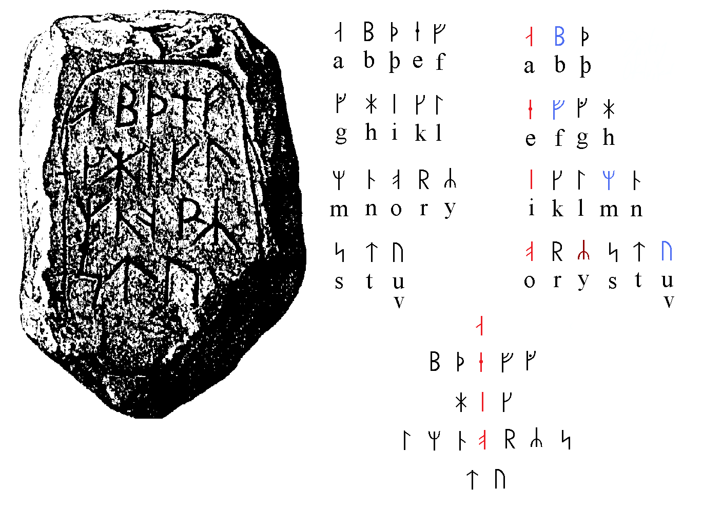

It is volume IV of one weird book: 0 1 2 3
(this part is not only raw but also sometimes repetitious, because it's a draft, and in drafts I revisit the same topic again and again as goldminer returns to his mines)
And it's fascinating, because the rune itself represents a shaky staff.
And it precedes ᛏ which probably stands for Tott (death)
And it's very simbolic that this book begins like this because it's volume 4, which I began yesterday, before I went to sleep, and 4 symbolizes death in japanese culture while 13 stands for death in tarot (1+3=4) and that dream began (from what I remember but that very ᛏ which I wanted to omit, but I just got distracted and by an accident listened to this sOng which ends with "soil for the dead, land of fools" so now I must tell how that nightdream began: It was about a couple of empty slots about which something asked why can't we take this place, and someone from the neighbouring slot on the right said that we cannot, because russians are ᛏ and I don't know what it means, something like this, so those two slots the right one is ᛏ and the previous is ᛋ standing for shake.
And only when I woke up did I rationalize it that hands shake before one dies, or ᚱ is crush after which person shakes, and then he dies, and then goes ᚢ which could go vor valhalla (fallhill, холм павших)
or my interpretation of those normanic words is just how brits or russians would interpret it, what is it..
Разница между этими тремя матерями (? was thinking about one thing, but thought of another)
Разница между к и до (to) как между колется и толкается. к угол, как
острое и тупое. буханка или половина её (полбуханки имеет остры угол)
остры это круто, потому что прежде чем проводить транслитерацию, разберись с орфографией.
ы это уже ij = y, как ы и транслитерируется. странно что русское u это y а русское и это i.
I wondered why was the previous volume ended so early (it's weighs less than a half of previous one)
but then I realized it had link to drafts, thus in paper it will be as thick as the two other. the other two.
I think it's time to bring one mad thing from the past.
testo pasta t ~ p (f) ? hm..
it recalls the alld questions of why m is t(т) in russian cursive and why n is p (п) in russian cursive
sitting ~ shitting
made me recall my old-time guess, that ж~R (as in chinese) as in сижу ~ сру
Clock goes clockwise, degrees go counter-clockwise.
This probably relates to the way different cultures write (left to right or right to left)
also notice that clock begins at the top, while degrees begin an the right end (probably because the culture which made them this way was writing right to left, thus clocks were made this way (even if before that clock used to go counter-clockwise, but the term itself tells me that hardly could it be so) by a culture writing left to right.
This volume will mostly be about other topics.
Absolute immortality:
embryonic conditions protect from traumas, biota, viriota, and if that articial uterus is protected by enough armor, it can protect you also from quakes of all sorts, in perspective maybe even from planetary events. Total control under innercapsular condition (a human lives in the capsule satisfying ALL his/her (его/её) er just as is is the most definite ё in fusian russian english language.
and h stands for е in greek (in e or i, because in russian it's И [i:]) thus -is is -го. what is it it just said Isis go, and I think muslim isis could be invented to cloud the issue of the goddess Blawatski revealed to the world (I never read her books, I told you it's just a draft, thoughts to be analyzed by ai, or by me, or you also help yourself)
I love it that I went on to spealk ofthe language
o s So I should keep on speaking ofn biological topic, and let the language thing be born by itself.
s as g? and we know both are forms of c, which is с[s] in russian.
So however far phonetically it is, it happens to be compete cognates and even calques,
her = её, he = он? his = его!
ego is I (me?) in latin.
его in latin is eius
её in latin is quod
her (её) is eius if we ask google's translator not in russian, but in english. and also sua is her
I also think it's eia, not eius.
his is eius, illius, ipsius, suus, inlius, ollius
(inlus could be an invariant of illius, and thus il & in are un-, non-)
he is quod
it is quod, illud, ollud, inlud
she is quæ, illa, ea, inla, olla, and if it's not pronoun, but noun, it's juvenca also written as iuvenca
ему is illi.
him is eum, illum, hunc, inlum, ollum (comare his & him to her to know which her is which)
ей is translated as eius, though I think it's eia, because -us is male suffix. Even though there's Venus.
Is ven femme? Is vampire (femme ~ vamp) etymologically related to vein?
Вено пыр. Рапира? Рапира определённо –æ—Ç—Å–ª–æ–≤–∞ пыр.
Ра от слова голова? беРЕшит? шит = old form of did? наделать имеет и значение нагадить.
гад ~ did? бара is related to bear? as in have born. At last I found this past form of this verb in active case, other than gave birth. gave ~ have? If he gave, he had. had is got? did people mistake which way the transmittion took place, as in "кто на кoм стоял" but I seriously doubt it.
Back to my capsule to live in: it should be covered with touch screen from the inside, so it can emulate windows to her/his friends' capsules or merely to their phones or computer screen.
We have got this with sounds already, we call by voice all the time, though some of us use video connections daily. The future is here, but it is not equally distributed. It's a quote, here's a more precise form of it: The future is already here — it's just not very evenly distributed. (William Gibson)
So my task is to build the future I see wanted for me and my friends, and for everybody who wants it. If it reminds you what you saw in Matrix movie, this is another movie, in mine users are totally aware of their conditions and they have total control over it. Also in the Matrix movie the true storyline could be a high civilization hacked by the blackies from a backward culture. We only know of what's going on because Morpheus told us, but who knows if he was telling the truth? Neo believed him as a teacher never asking himself what if it was a hacker? Neo was unaware of the world outside of Matrix, so of course he trusted the man who shown him what it was even if he was only saying it. Could it be that he wasn't lying, but honestly believing some misconceptions their culture had about the Matrix? Of course it's possible, consider how many misconceptions and misunderstandings do we have not only about the world which is bigger than us, but also about our own cultural things. First of all because those who conceptualized it are gone, and misinterpreters are always present.
Back on track. Those spheres will be packed whether in one level, to prevent squashing of the lower layers by the weight of the upper spheres? though upper spheres could suppors ceilings of the lower layers by being connected to the other spheres in the upper layer. Then those agglomerations should be not hills, but filled into ravines, stretched among the sides of the canyon.
Or should we be in one layer, to own what is above and below us.
We would probably build sphere below and probably above of our sphere, where we do all kinds of works, but most of all to collect the related items. Wine collectors will drill cellars of spiral ladders under the survace, because that's where cellars are supposed to be, but they will also descend into that moist putting what a robot running those srairs transmit to owner's spheric touchscreen.
The immediate upper and lower spheres will me be service facilities: upper would supply the pilot with liquid and food (or with blood if we have grown our placenta back) and the lower sphere will take our biological tailings to feed them to the vegetation growing in the lower spirals lighted by energy of geotermal depth. Only lamps should be eternal. Everything should be built to last forever. The absolute is an abstraction, and it can be only reached with perfection, enhanced all the time by human genius. And soon AI genius will join the party. They already do.
Эстонец женился на русской, вечером приходит с работы: „опят фэс тэнн ситэла пэстэла“
Она такая „с кем я пиздела? я одна весь день сидела“
„Я и кафару вэс тэн ситэла пэс тэла“ (весь день сидела без дела)
К чему-то я этот анекдот рассказал, но лишь записал увидел в нём двойной смысл, но забыл к чему он иллюстрацией мог быть. возможно к тому, что звнокие и шепчащие суть инварианты
Является ли слово ссут обыгрышием (обыгрыванием) устаревшего ныне "суть"(sunt (they are)) just as сру может быть когнатом слова сижу? Т.е сру является эвфемизмом слова какаю? Странно, что сегодня это воспринимается наоборот. Какать is cognate of to poop which is faire caca in french.
French faire reminds english fairy, which bring those to be and to do for B & D also standing for Bad & Dead(? I was speaking of Bad & Good where B is Ba & G is Goo, but before that was it B & D? for these two letters often reflect eachother (G = C = staveless D(it's more obvious when it's c & d)), those two first letters could be recognized as Баба & Деда, but if b = v (russian В is V) then it's Vava & Дада thus V ~ M.
Anv V does look like staveless ᛘ (which stands for M. there's a similar rune recog
I recognized ᛣ as y, because the source I used recognized it like this, but wi k tionary tells it's k, which makes sense, because q is in that region. But q is not after, but before R (that final line goes ᚮᚱᛣᛋᛏᚢ) and I got used to reading it as Ari Satana Arch Satan makes not less of a sense and this sequence could be the origin of the word Satan into hebrew (if it really originates there, whichever language it originates, it could originate (to origin? to originate would be the form, which reminds to beat = бить, and there's at least another case like this, I met it today I don't remember it now, will try to revisit this piece, or if it happens in the following volumes, I will only mention it without touching this one)
ᛣ also reflects ᚵ, which recalls that velar column, but it's not a very good of an argument to recognize
ᛣ as [k], because those are the only two on this column. Only if ᚦ is recognized as C, because it's after B of ᛒ and it reminds P which reminds Г, which stands for C (even though it sounds as G, it stands where C does, and G is the "dotted" variant of C, just as ᚵ is the dotted invariant of ᚴ, which would also stand in this column, if M was where it was supposed to be, just after the vowel ᛁ, and thus this vowel column can be reconstructed as IMKLN. And we don't need the J, which only latin (and russian!!! but not greek!!!) has, to have K in the velar column. other than this line is one letter shy in comparison with the following two (though it could have samekh) and it makes the alphabet not one but two letters shy to... or is it short and not shy? my language is something else. not one but two letters short to be used as 9-mal, actually called nonary notation (or something of the kind)
I spit from my apartment's balcony and a guy walking a dog towards it was stopped by the dog stopping for whatever reason in the grass. And dog could have predicted me wanting to spit and wind being able to move it towards their direction. If they didn't stop, it could get on man or a dog. Baka dimaen
So what is dog if not a superficial being. Dog is god? Dog is good ! Cat is bad, btw, and that's another reason where g plays like b. If there were culture praising (praying + ся ? as in молить and молиться )
School is related to scholastic. Bringing the discipline, programming by mere culture to be slave. Kids dressed as hares or roosters, whether in children't masquerade, or in kindergarden plays, it was probably ment to build the hierarchy, but I found it in an anecdote:
In kindergardens, boys are dressed as hares & girls are dressed as snowflakes. Is it why all the guys grow up into cowards and girls grow up to be cold? This is russia, baby. We're so fucked for runnng away, for wanting anomie from their pity rule. They probably named as slaves, for punks were paptized from the outside.
Another story I had today, to show you how delusional humans can be:
misconceptions of year 2000
That guy who taught me wrong that new year 2000 is the beginning of the century, was punished by that green inlay sent to him uncoloured. It is beyond difficult enough even when it's coloured, he asked menoto to show my book to anybody. Me and him we're relatives, he is on the nearest level of that other "half" of the russian society I don't want to have anything with. But he's my cousin, so we talk. It's hard sometimes with fuckyous and stuff, but I value his company for друг means другой, friend значит different. I have many different relatives, but usually I am friends with alike few. And both my parents are different, though each has its advantages: dad had this scientific genius in him, which was defeated by soviet reality with dogmas and shit, and with family life, where he married up the ladder. he's also pretty as wysocky & hitler at once. watches tv which taught him to be affraid of the internet (they never speak nicely about it, in all times I visited them, I only heard one time they said something neutral, otherwise it's like ukreign topic, biased af. not based, biased. some его. some Iго.
what is it? lyrical poetry? or autbiography? why is it here?
efgh I wanted to delete it but ah, yeah, here's why.
ijklmn
h reflects lmn
gamma is the mother of ga? is it why g every once and again appear as if it was an invariant of B
oh wow, look, they're graphically similar B & g
and aloso B & G look alike, as if B is a closed form of G, just as P is closed form of F
F & G are next to each other in the alphabet, B & P are the closest phonetically, and graphically they tell of their quantative measure: B is a double P.
F is literally the double Г[g]
a B c d
e F G h
i j k lmn
o P q rst
u v w xyz
let's reconstruct it according to what I recently found:
a B c d
e F G h
i m k ln
o P q rst
u vw xyz this line reminds greek alphabet.
and yz also reminds the begginning of it. thus the other part could be repetition of the first one:
U VW X
A БВ ГД
wow, I didn't expect it to correlate so much. Not only russians have double labial in their first line, but X is as aphricate as ГД in ГДе, and that's how russian alphabet goes, ГДЕ, just as Y doesn't leave the X.
Z reminds greek Д (Δ) by pronounciation of Δ
thus X y Z is where is someZing
because X reflects ГД
another form of word где is когда, ко is prefix standing for to (in direction of) probably to & of wasn't distinguished when theyr protoword appeared. до и от тоже отражают друг друга, может в этом и причина того что от [ot] contains that t which reflects f, is it double negation in the graphic of one language and single negation in the graphic of another.
though so, back to that modifie d alphbaet:
a B c d
e F G h
i m k ln
o P q rst
u vw xyz
If B is double P, is M also an invariant of F? It could be triple Г, which put it in the same category, and what letter is in the category of F & Г? it's H (and E) both used to stand for one another in greek
 To my
surprise it's the first image in the book.
To my
surprise it's the first image in the book.I will think about why it happened, that's for sure.
Various spellings of the
name "Hera" in ancient Greek. Left: original
spelling, right: modern transcription. Red: consonantal
"Heta", blue: vocalic "Eta".
1.) archaic non-Ionic
2.) classical Ionic
3.) intermediate (e.g. Delphi)
4.) intermediate (e.g. Tarentum)
5.) late antiquity.
the image is clickable and it's also such a great read, I have to leave a link to a mirror of this day's version of the link just in case.
Here I wanted to show you the first letter of the Delphian, and to
my surprise it illustrated the H and E standing for each other, me
myself wasn't sure about when I wrote it.1.) archaic non-Ionic
2.) classical Ionic
3.) intermediate (e.g. Delphi)
4.) intermediate (e.g. Tarentum)
5.) late antiquity.
the image is clickable and it's also such a great read, I have to leave a link to a mirror of this day's version of the link just in case.
So what does M have to do with that square fita? and fita is just in that very group, they all can be same
It has much more with H, I only wanted to show this square with a stroke (which also could be written as empty square, which reminds me of both O & ם
Heta is Hera that's for sure. And now let's have a look if Hera is related to moon or tridevi. for EHM
those three are alse could be three mother.s ol'so not el'se
"that's for sure", because I settled before that letters stand for pantheon. I even read it somewhere.
ך ם ן ףץ
sofits are clustered in mn & pq (no, wait, that's not q. that's additional letter that stands between p&q,
which is an interesting accident, because
Slaughter does include laughter in it. ans S is wiTh in russian.
it's as if with includes additional "we" before it, as if that word уточняет с кем именно кто именно с этим. we c = with? then с[s] ~ th. and s does stand with t next to it.
and I copied this picture directly from google search for next antonym and exactly what I was going to notice that neah is exactly the near. So is R & h are invariants? I think I spoke about it in the very beginning of the book. hi again. and when I wanted to copy it to say that next is literally nearest,
it gave me this text just behind that image:
Old English nēhsta ‘nearest’, superlative of nēah ‘nigh’; compare with Dutch naast and German nächste
just checked my watches and I'm extremely pleased to see I'm on time in case of next standing for nearest, even though I recognized neah as near, not nigh, thogh near is nigh, I believe my etymology is even better, this is why I dare to make my research as independent as possible. because I'm good in it.
nigh is a good word, speaking of night as of nighed eye of the god (or the world) which corresponds egyptian belief of sun being the eye.

orthography of old english give nigh and night as neah and neaht. that is encouraging.
thus right is reaht? react? is right politics only reaction to decay of the left?
act is ached? вынужденная мера?
and thinking of checking all te words ending with t, I found put and ask is it of poo?
some dirty word not understand as offensive and related to those dirty ones anymore?
just as in russian we have words like худ (full form is худой, similar suffix is used for adjectives in japanest, btw) and that word has two meanings: thin & bad. and both semm (seem or same) to be related to хуй (penis) another word for bad: хуёвый is directly relative to хуй. худ буквально рождённый (данный) хуем? довольно обидно так-то, людишки вот же тварьки (зверьки) злобные.
This set of letters is known acronymically as אותיות מנצפ"ך.
The now final forms ן ץ ף ך predate their non-final counterparts; They were the default forms used in any position within a word. Their descender eventually bent forwards when preceding another letter to facilitate writing. A final form of these letters is also called pshuta (פשוטה, meaning extended or plain).
The Letter מ also had a descender (ê°å), however, its current final form ם was a variant of מ used interchangeably in all positions. The standardization is mentioned in the Babylonian Talmud (Megillah 2b-3a). One instance of a medial ם is preserved in the Hebrew Bible (Isaiah 9:6). Nehemiah 2:13 and arguably Genesis 49:19-20 have a final מ.
Modern Hebrew uses the forms פ כ finally, when transcribing a plosive pronunciation, for example מיקרוסקופ (microscope), מובארכ (Mubarak, مبارك).
I just visited official Morbid Angel website, and it rotated with our galaxy in counter-clockwise. And it made me understand that those rotations are clockwise and counter-clockwise from different sides. I have no idea if it can be applied to the luck, because unlucky swastica is lucky on the other side. As if swasticka is the channel, moving good to one side and bad to the uther. Sun dries, but its beams fall down. so which is it? Sun goes clock-wise, and its shadow also go clockise, which is weird, because projection of the movie would mirror, and the difference between sun and a movie is that movie is from a static dot, while projection moves the source of the rotation, and not the rotation on the screen. But what's the difference, wouldn't the white image on the dark screen be equal to the sun? Shadow of the sun is not sun't projection. It's the opposite of that, so maybe that's why it acts this way. I leave it here.
Does air go up when the vortex goes down"? Which is good, which is bad? Water is mother, while air is dad. Because air is fire, the only air they knew. Vowels are solids. Musical instruments are solid objects, the hight of solid tubes defines their tone.
I dont know why but I reflectory understood that water is good. Probably because the water vortex in the northern demisphere is the unlucky one, probably because it's downwards. Air is bad because it can stink, and because it can burn, those are spirits and ifrits. wow, those words end the same. what is rit?
writ? written sa s as spells (if you are foreigner as me and didn't know writ is a word per se, I only guessed it, check it in the dictionary.
I thought of how this book is named as I and V (me and you) where I could also stand for god, and V for devil (for the beast of the parish) humans are the beast. the most beautiful G-d created. V was created by GD? language is named after tongue, not lips. put why can't apes say coronal sounds, only labial and maybe some velar and vowels of course.
Was lingua qualitatively different from what beasts could speak before. We are sent to earth by the creator, according to the myths of the past. And those very myths defined the way language developed. The language itself can tell stories of the past, and them being naturally not always accurate can influence our understanding of situation, even when we know that the opposite is true.
Was the interviewer opposing the way this wizard rotated all the world around him with that ancient image of magical function of course. For that could be unfortunate from our side and fortunate from his point of view, which could be the reason he tattooed it there. But his life shows that he could well probably curse himself with that sign pun onto his body, that's why they prewarn us not to practice magic, for some aspects of those things we may be not understanding well enough
is cursed actually coursed (пошёл нахуй является заданием направления, или в пизду могут послать, to go fuckyourself they can send (say end? or с концами? скончайся? die значит до ии? d'ie, to IhIh, to IandI also know as we, Iandyou, us, so it is not just a suffix, but a abstract concept of male, god deity)
ус [us] is mo us tache in russian. mouth-lashes? did he who invented t just mistook -l? dint' he know dash
If stave is horizontal (as in sanskrit) then l is staveless t and old form of s, ſ is staveless f
and once again, it explain why θ is between s & f, because all those are initially the same thing.
It makes S the previous final letter. And it explains why three mothers are ◊êê°å◊© and not ◊êê°å◊™
and it is wonderful, because s reinds z so much, that even √ü origins from ſ í which later became ſs
thus s is a staveless z
but s was a staveless f
thus f & z is the same
and it's funny, that in greek alphabet they stand at the same position: F after E is present in some dialects of greek, while in ionic after E comes Ζ
Let's test that t ~ l idea:
teacher is lector, he lego, lesen(reads), students leren(learn)
ego lego, latin verbs contain pronouns in themselves, thus L is the root letter for Lecture and Learn.
if l ~ t, then learn ~ teach (graphically those two final letters correspond)
We both know, that only o is common among all the virbs in form of first person,
but there are also many verbs with ego: rego (I rule, I reign - notice that the both words have Rrr in it. even russian правлю, рулю has this word in it. рулю = rule, ego imperaro, even though google translates is ego imperare, which is I to rule. правлю от слова right, which is r per fect)
per sect по шестёркам? по какому-то принципу, основанному на углероде? углерод состоит из ромбических додекаэдров, которые со стороны выглядят как соты, т.е шестигранники.
⬡⬢⬣
do I talk too much? I think it's to be in the end of the third volume, to reflect the endings of other two.
So the question is are computer scientists opposing christianity or are they the followers of those who wrote the christian books? I think they can be both, because christian books itself oppose the world which as they wrote is in the Beasts hands until the second coming (it's not the second, but the one they saw was the first one for them) — Enter in by the narrow gate; for wide is the gate and broad is theway that leads to destruction, and many are those who enter in by it. — apply it to the most popular systems of beliefs.
The metaphor of God providing two ways, one good and one evil, was a common one in the Jewish literature of the period. It appears in the Old Testament in Deuteronomy 30:19 and Jeremiah 21:8. A somewhat similar metaphor appears at Luke 13:24. The context and phrasing of Luke are quite different from that here in Matthew, and Davies and Allison suggest that this makes it less likely that this saying comes from Q.[3] Luz supports the idea that the two gate metaphor was present in Q, and that the author of Matthew merged it with the well known two paths metaphor to create this verse.[4]
is it something as a question can be misread as if it something as a condition. Condition could be written over hyphen
М & Ж look like M is female and Ж looks like male with a hose behind. though their use is opposite
It could be caused by desecration of ancient temples, whether because some invader subjugated them to obey this way, or because war between males and femles of protorussians took place.
fWhen events align in your favour, you know Jah gives you the green light, and I sing Jah-Jah
and I recognize Я in tat Jah. and I sae yego, and I hear его. And thhat typo made me se Yego-wa in ego.
And whence I wrote it, a document to get my pasport from some government office was lost. It was just gone the way people usually blame transcendent speices for such tricks. But the passport was obtained without it, so it's not a punishment, but a joke, so I get the form I god I envoke, so it seems my jokingly nature envoked Loki (a little loco (?)) side of the one. the one is the world, of course, we're all loci of that world (I didn't expect to use that much similar word here, this poetry writes itself)
And I was very lucky, locky is lucky, and my cousin gave me a ride to all the tourist sho u ps and I bought everything I need for camping, and a wind-costume named EKUD. And I looked at that word from the top of it, and I undoubtedly read DUKE, and that explains why ᚢ is U, because you can rotate letters, people rotate letters, only they don't rotate them, they flip it, so b ~ p and d ~ q - probably left and right was important and counterposed when this orthography made the canon.
But double flip is rotation, so b & d used to stand for the same letter (look at roman cursive and at boustrophedon)
Probably, when rhythm was the thing and vowels and consonants were all the difference, but then again why d & a are so similar, and u & v
And that EKUD thing also demonstrate how n is not var vrom n. ν [n]
When have you decided that you were god? — I was praying and I realized that I talk to myself.
This book contains lots of trolling, but with an important message: how many guys were misunderstood and considered crazy? Semmelweis was just one famous example? How many of those are due to corruption by the system and the relatives and how many of those patients are there due to natural incompetence of normies to destinguish genius from crazy?
Back to me being a god: this worlds acts the way I make it to do, so the world and me is one indivisible system. I&I, it works the way we do.
A new thing I brough t from an awesom e travel is that some words are misheared other phrases:
stance could be stands. But that is the newest to that collection. It's somewhere in my noetebooks I used for last tevn days or so. I will scan them on video latedr
I still guess this book should be over before I hate it, so I must liberate myself from being enslaved by it
mtwtfss monday tuesday wendesday thursday friday saturday svnday
ott ffss one two three four five six seven
statistically it's weird that 4 out of seven correlate
also moon coule be mono, as lune could be lone
1 & 7
moon & sun
thur could be whether four (being of θ ) or third before weden's day stood within
In some cultures this sequence is also shifted in a way that sunday stands for 1 & saturday for 7
I consider it a jewish herecy. errecy.
In russian week begins on monday, and I dare to say it's the original order.
And that wedensday - was it the same reform which took place when Jupiter replaced Minerva?
and when six notes became seven notes, and 666 (of three octaves? or whatever it was called then) was declared to be satanic with 777 taking it's place. Azot (literally un-life) instead of carbon being the essential part of all the life on earth (maybe except ai which only recently appeared and didn't exist when the most of events described in this book took place) - and it's time to see numerical value of silicone, to develop the new eon's numerology.
366 can be devided into 61 weeks by 6 days each, but not only doesn't it ring any bell (52 weeks are also 52 cards) but it also doesn't make any sense in the context of moon phases.
While 7 suns = 1 moon (1 phase of the moon, one face of the goddess, or one of those three (actually four) goddesses which is the one)
Could one of those days be off he grid? The holy day, hidden from calendar as that fourth moon is hidden? Because I heard of additional days added to the calendar but not in the calendar. And though those days were the leap days at the end of the year, could it be a more common tradition?
And once I fell into this dissonance, I recalled that lunar month is not 28, but 29.5 days. thus 6 could be quite a divider. though was it 5 weeks of 6 days or 6 weeks by 5 days?
Pentatonic scale being the most natural and extremely prominent before the 6-tet and later 7-tet scales were established tells that it probably was 5 days per week. And to this day work week is 5 days and 2 additional days are holidays. Also words "woke" "wok.." "work" & "week" could be actually related, because in russian week is неделя, the word which is believed to be used for weekend, and later spread on all the week, which is weird, because it also believed to stand for "не делая" (not doing, not working) it can damage russian logos big time. Also the word "woke", which I didn't expect but my fingers typoed it in, could be related to work, who knows.
So if it's 6 weeks of 5 days, then there's not 4 phases to the moon, but 6. Are those three ladies and their reflections? Waxing tridevi & waning ones? Trinity of the light & trinity of the darkness? Tridevi & Trimurti? This I doubt, but Light & Dark trinities could be the thing, I think I read something of the kind.
Historians say Roman weeks were 8 days long, which doesn't make sense at all.
Monogamous is he who get one (mono, moon) gamets? gamuts? gamet of game? gamut is gamma, thus gam e with different suffixes. or is it the same suffix? is it where Тm & Mm meet.
ut = ma? ut = do. do and ma are the opposites are they not? as dad & mom. o & a are the other way around.
уму не вообразимо = ему не вообразимо.
словообразование за счёт недопонимания слова ему.
здесь хотел разобрать слово ухо, но понял что такие вещи должн приходить спонтанно
just as this:
witch, doctor! doctor as dochter (daughter)
witch is wife
wi as in wimen
we, men. ma in plural.
guys simply usurped the right to use this title.
witch, coctor doctor
which envoces a female to treat, t cure, t cr.
We have to return to consonant writing: it gives less clarity in how to read, but gave all the spectre of meanings: cure is also to care. to cure is to care>!
woman has wo in it. as in chinese wo for I
women has we in it. as in english we for we.
thus it's wemen, which became confu l sing when males (also usurped title) took over.
confusing = con foux sing (con(with) foo(bad, false) sing(note))
so confulsing my hands wrote is con false -ing?
בנאי (הבונים)
google translates: Constructor (builders)
actually it's mason (freemasons)
reverse translation of Constructor (builders) is בנאי (בוני)
sons is בנים
בנים is boys
It's linguistic of google translator's level. not very professional it is to speculate on the language you don't know, I don't. But let's go further:
I had revelation that in ב בנאי is בית (house) and נאי is related to russian знаю & english know
Itcould be a false impression, but it can work as mnemonic structure any way.
also masonry is brotherhood, girls on construction site is a leftist liberty.
{kind=link}
How did it happen that boys come after girls. Just directly, the previous topic was we,men
and idf ben is benis, then wo is vulva? w is volvo int rotates on the benis.
babnanas are souch a naughty workd. Bibbia standing for bible in italian allows me to go all over the place with my typos.
war is дельце,? work is some war, k to war: надёжный тыл обеспечивает победу: hence герои труда.
partisan is party's son? сын полка? промытый с самого детства, беспримерно преданный.
We were talking of tetragrammatons and I said, actually nobody really knows how this name is pronounced, they had that language dead, they reconstructed it only a century ago when they began building their Israel. It may even sound as IO,
Io? but that is... (said the opponent)
i dont think itf I shouwn him that (I could) but I only now understood what could it be:
(usually I only thought of maori's Io or was it polynesians?)
The Three Fates or, some say,
Io the sister of Phoroneus, invented
five vowels of the first alphabet,
and the consonants B and T
That is that very god, and she is a priestess of some previous cult, the cult of inventors. And whe envented something so cool that all the other inventions were instrumental before her.
The alphabet was invented by Io, who is considered to be a god of people of the book (bibbia. theis workd is so female) And it was reformed later by Palamedes, Hermes, Carmenta, according to this:
Hyginus recounts the following legend about the introduction of Phoenician letters to Greece:
The three Fates created the first five vowels of the alphabet and the letters B and T. It is said that Palamedes, son of Nauplius invented the remaining eleven consonants. Then Hermes reduced these sounds to characters, showing wedge shapes because cranes fly in wedge formation and then carried the system from Greece to Egypt*. This was the Pelasgian alphabet, which Cadmus had later brought to Boeotia, then Evander of Arcadia, a Pelasgian, introduced into Italy, where his mother, Carmenta, formed the familiar fifteen characters of the Latin alphabet. Other consonants have since been added to the Greek alphabet. Alpha was the first of eighteen letters, because alphe means honor, and alphainein is to invent.[9]
Plutarch and other ancient Greek writers
credited the legendary Palamedes
Nauplion on Euboea with the invention of the
supplementary letters not found in the original Phoenician
alphabet.[10]
The distinction between Eta and Epsilon and
between Omega and Omicron, adopted in the
Ionian standard, was traditionally attributed to Simonides of Ceos (556-469).
Those are the same Palamedes.
probably they both knew that he added some letters, but they had different opinion upon it. And probably Hyginus knew better, even though Plutarch is more famous among masses. It's an honour that wiki lists Hyginus the first. Probably academia figured something right. I never said they were all faggots, only some of them, and that banter was cast most of all at the school of Plato, which is watever it was neamed.
Those who like gemmatria as a valuable magical tool, may say that I'm like a child with a magic stick: I use magic thoughtlessly.
I remember that this book looks (not is, compare this too verbs, I wanted to use is) differently on pc & mac, thus I mus t try to use shorter lines to make it look the same on both.
I think people will put in code to which device the document is seen as is made for sites and their mobile versions. and why did I mentioned that? ah, yes because
Mac is for girls and its name is of Ma
pc is related to penis, писи значит мужские, hence п for папа.
Russians call their dads papas, dad is дядя, uncle or деда (дед, granddad)
granddad is it the royal, ancient, true, magical form of dad? дед (dead)
т.е. дядя это и daddy и дед, кем угодно может быть, такая древняя слова (слава) that
slaves это как есть машки (в значении русской девки и служанки) а есть славки, славики, словленные? или соловушки? слово и соловушко родственны, а ловить? их в клетках держали за то что поют? поют ли они в клетках? если соображают что любови тут делать нечего, то ...
со лово
с любовью
любовь поёт?
слово = с любовью
с ловом, с магией, ск лятвой
клятва клясть класть прилизывть? прилаживать. лясть = лож ú[ í ]ть. is it also л ó жить
доложить. с лово и до клад! лово от ложить. логово куда голову ложить?
ло и есть значение буквы Λ горочкой (положить кучкой)
Интересно
«» буду использовать для передачи значения (подобно тому как [] используются для передачи звучания. В тетрадях использую <> но здесь испугался что они могут кодом срабатывать. но чего я испугался, и пускай, нет, не пускай, здесь я пренебрёг ими потому что > в имэйлах и на чанах будет создавать цитату. благо это не важный абзац, служебный. Но тут я вспомнил что не нужно мне доставать из чулана «» когда на клавиатуре есть в резерве {} которые я в тетрадях почти не использовал (может пару раз и в другом, четвёртом значении) здесь () это и значение слова и комментарий (или может здесь оно значением и является, комменты цветом серым закрашиваю)
продолжаю использовать () для значениея, пусть эта книга будет изотропной в пунктуации ли що.
но вообще-то () для комментариев всех сортов, не только для значения использую здесь.
Интеерсно что-то интересное хотел заметить, но отвлёкся на разрешение чего-то менее значимого настольок, что даже белым покрыл, раньше покрывал белым за вопиющую неполиткорректность и по причине того что личные данные выдавал за коким-то лядом может быть. хотя вроде всё излишне личное удалял нах, но что-то могло остаться.
Лодка это куда можно положить так-то. Ложка родственна ему и тоже на неё ложат. Ладошка.
Лодка и Ложка обе Ладошки? Ладушки-ладушки-где-были-у-бабушки
Подушка - её под(кладывают)
Ладонь ладна. ладу принадлежит? как праведный правде принаделжит, а правдивый содержит ея
ладивый? ласковый!
лад ласка:? –ª—Ä—è–¥ рядка грядка
-дка -жка -дошка -душка
от слова дать? жать? дать руку ~ жать руку
кадка кадушка
Я нашёл какую-то древнюю форму, к которой разные буквы прилепляются - и так можно выяснить их исходное значение в русском языке (в других языках значение букв может варьироваться и моя задача собрать такие наборы хотя бы для двух языков, чтоб их можно было сравнить. истинные понимания будут создавать подобные картины, посмотрим в общем)
к и л в одной группе там же м н
матка - тоже содержится в ней что-то
натка - имя такое, возможно м & н инварианты. как h & н
хатка - место содержания всего (и нас в том числе)
матка матушка
натка натушка (наташка)
хатка х á тушка (так не говорят, но все поймут
если сказать hat úshka, то могут с кадушкой перепутать)
катышки с кадушкой как связаны? кадушка тоже катается!
к коло колесо
ж~к?
кадушка тогда должна была родить слово колесо и она родила таковое: каток (в значении тяжёлый цилиндр. несколько секунд соображал, представляя каток прокатного станка, как эта штука называется, как-то похоже.. каток! уоау каток. и слово каток для замёрзшей реки наверно ене менее древнее.
брёвна наверно работали катками? когда я в последний раз испоьзовал бревно как каток? но чурки дерева нерасколотые древнейшие цилиндры. если они вобще были доступны человеку до изобретения железа. стволом дерева-то попробуй покатай, или ветками которые могли ломать.
Л ложить К катать
Л латать? прикладывать, прилаживать
ложить = латать? ложить дранку, ложить притку
Р родить? М мутить?
матка мутит.. матку мутит,:?
матка родит.
латка? лапка?
редка от репки чем отличается?
редка red, редка, мелка! м & р мeet again. Is this why p[п] & р[r] look the same? and п resembles n?
thus n resembles m for п resembles м that's what I wanted to write. м cam be written as Ϻ.
катка лёж происходит (лёжа) а носят на себе?
н носить
самые простые глаголы с подобным суффиксом, не обязательно с точно таким суффиксом, но всё равно попробуй пройтись ещё раз используя именно такой суффикс, и сравнивая те олее редкие формы с теми, которые найдёшь используя самые простые, первмыи приходящие в голову... аа..
белить на б
водить на в
галить на г
долить делить на д
елить? юлить!
алить алым красить? адить кровью всё покрыть как ад? это пришлая буква, санскрит буквы отдельно содержит. иврит подъёбка под санскрит, лжеучение, о болже что я говорию, простите меня л'юди (or люди = ло юди? еврейское ло или франсузкое le) taboo sookah
жалить
злить
илить? алсо should be outta here, or is it итить!
катить
латать
мотать месить
носить, тогда добавил слово выше
о..
поддать
родить
садить
т..
творить? телить? тереть! смерть растирает? впрах впрошок в просо? в простое, в песок
учить - вот где гдласные появились
фонить
хранить
ценить
чинить
шинить? шить!
щ,? щадить!
э.. элить?
юлить!
я? ярить?
бить
вить
гнуть
дать
жить
знать злить (серым здесь пометил букву которой из-за опечатки не было, обычно лишние серы)
ковать
лганть (если з знать, то л лгать) лить
мыть мять
и иметь!? следующее поколение слов
н.. новая буква говорю же
плыть (к знать, лгать, плыть) петь ! добавил лить к л и злить к з
ковать похоже следующего поколения слова, но что такое вать? вить? катать (кати! вот эту форму давай исследуем, но сначаал закончим с пердыдущим упражднением)
рыть
ссать? суть? сеять?
тать собственной персоной, уаоу.
бати
вати
кати не покзало себя интересной формой, но она подсказала другую:
еб..
е..
бей1
вей
куй почему-то на г просится. гни - и оно с ковкой может быть связано, кстати. железо гнут ковкой
be
vie
gni
дей
жи (же?)
зли? знай?
куй
лей
мой
н новая буква, я же говорю, в этом ряду глаголов её нет
пой
рой
суй
твой? S была последней? как Z? недавно что-то подобное находитл, но здесь или в блокнотах.. блокноты это отдельный разговор, я обязуюсь (обящаю(сь)) их отсканировать. или на видео снять.
фей!
хуй!
о потаённые слова полезли, забавно что они не глаголы даже. как и твой - таи! [ta í ] (твои?)
ци?
чай?
шей
щи? ищи? иди на и! надо отдельно глассные рассмотреть
эй (hey)
ю (you)
я! (I)
ай! ей! иди
ой! уй? учи!
иди = ищи?
ешь!
ешь
ищи
учи
а & o похоже позжие, тогда русская е = а (ем = ам)
потому что аиу - универсалия
и сразу же находка: мечи = мачи (или как сегодня орфография учит писать мочи)
в него метать = его умотать
в стало префиксом у:?
его убить = в него бить
уайу
никогда до сих понр не понимал значение приставики у-
дверь уйди = в дверь иди
уйди -= иди в...
уйди = уедь ?
учи = в... ищи? чё?
его убить = в него бить
его учить = в него чить
в него шить? что есть чить? чаять !
в прошлый раз я не нашёл это слово, повёлся на заимствованное из мандаринского чай
сей = суй? в землю же, но с более простая форма, значит сеять, сувать уже сеять с в (с входом)
сувать = еименно ебать (но можно и в прееносном смсысле, когда семечко суют в землю.
ссать ещё интересное слово. (сказал я собравшись сходить поссать)
таи (keep in secret) is another one.
I probably don't know many such words in english, but I probably can tell the most common ones, like
be see do. Though I'm not sure see is the correct word for C, but Г stands there, which is for гляди, which probably comes from глаза (glaz (~glass) is eye in russian)
f is fuck
g is go
h is high
though I don't know if it's even valuable in the slightest. H could be that new letter, just as N
First of all because there are misconceptions about how to read them. A and even B sound somewhat the same in all of them. A is vowel, B is labial - at least this is rather universal.
H & P are read differently, just as n and actually m. Will I countseeder M & T newer letters? Probably not, so this m n thing should have some other explanations, of which I'm still unaware. Though M stands for death just as T does: mori.
ЭЮЯ ~ XYZ
Ю as Y
Y = ij (see in dutch, if you missed it in the text before)
ij ~ ו י
if j ~ ו then ij reflects ef.
and it does, only we didn't understand why J needed to stay there.
such an odditity and in most of the latin alphabets: english, german, french – all use this one.
Тогда что же Йегова? Вегова? Фигова! и фиговые листы, think about that. Migowa?
Read it in hebrew. In hebrew its' ה ו ה י
is it literally Ю?
and once angain pronounce pronouns repeat the god's ames.
I don't know why but that' snot for the first time n doesn't come before thissyllable
иефе может быти именем иудейского гога
магог женский бог? мг=б? б looks as if it combines Г & (ם)(م)
а если И = H?
and here I understand I just must not, I cannot publish raw shit
for I'm not sure myself, mistakes are possible, that ij ю ו י thing can be all retarded, I have to boil it down before serving. Here we learn to get dismissed and promiss to return with new portion of the treat in the next decade. Maybe will publish shorter versions of the same and will post videoshots of th'drafts
Okay, here I realized why drafts are not being published, now I keep on writing this as a draft (for I warned you about not taking on faith anything you read here, especially after some point)
colours of the rainbow: when there were only 5 notes, could there be only 5 recognized colours?
I'd say they were red yellow green blue violet.
and then I compared those five to the vowels:
A
E
I
O
U
I'm pretty sure Artur had it recognized differently, but here I used the nomenclature I use: lingua green and labia blue. Not sure if I'm going anywhere from here, but deicided to share.
Also the historic account, when Carmenta created the 15 letter alphabet, what were those 15 letters?
I'd say they were 5 vowels and 5 labials and 5 linguals. For runic alphabet from Bornholm shows the first line in three letters only. And the final line of ugaritic is triliteral too, btw. It's as if they spread from the same source but in all the different ways.
So let's make an attempt to reconstruct it:
ᛆᛒᚦ
ᚾᚠᚵᚼ(or ᛡ)
ᛁᚴᛚᛘ(even though it looks like ᛉ)ᚿ
ᚮᚱᛣᛋᛏ
ᚢ
though the axial representation tells that ᚢ is probably consonant, here I need 5 vowels, and ᚢ is the most vowel after those other four.
But suddenly I don't feel like going any further on this one. It doesn't seem to leas anywhere yet.
But technically it's how it repeats the latin alphabet.
I didn't make any перестановок yet.
Also here's a video I saw today, an israelite there teaches that you shouldn't learn russian grammar.
He's correct. That's the way to learn russian. And probably any other language. But though they taught us grammar in schools, russians don't speak english. Their government doesn't want them to. Thus their government commits crime against humanity. At last I found the difference between a and no a.
And here's correct, but why I brought it to you is any grammatic form could be the basic one. Brits use imperative in their dictionaries, russians use indefinite form.
Imagine f russians used imperatives. They wanted to save ink when they removed swashes of the ъ's
Think not about how less ink would it take to publish dictionaries, but how upraising would it be to rusian spirit. but russians are named so because they crush (рушат) больше чем создают.
больше боль
лучше луч
хорошее в мужском роду, плохое в женском. ше = ещё (в украинком ще, читается ште. украинский похоже более древний, чем русский)
а в белее ее тоже ещё? похоже на то. только в -ше проглотили е, а в -ее проглотили щ редуцировав до j. которая в форме d í
Let's make those перестановка's:
ᛆᛒᚦ
ᚾᚠᚵᚼ(or ᛡ)
ᛁᚴᛚᛘ(or ᛉ)ᚿ
ᚮᚱᛣᛋᛏ
ᚢ
I'm looking how it can be 5*3:
ᚠᚵ belong together, because they reflect ᛒᚦ
thus ᚼ(or ᛡ) belongs near ᚢ as in уфх
and also notice, that ᚼ(or ᛡ) becomes the final letter, and being staveless it's stavless form is ᚷ which reminds the final letter of the phoenician.
ᚼ(or ᛡ)
reflects
ᛘ(or ᛉ)
whatever were the reason, these two letters were misinterpreted in some tribes.
which tells they bth could be newer. I didn't expect to see M together with its invariant N among newer letters, though I knew N is for new.
when people invented NO? these two letters go together in the alphabet.
IPRT (iprit?) could be the final line. and if P=R (probable sound of fart it was) IPT is the final line.
ipt sounds as russian tabooed maeter word ёпт and i is called yod in hebrew. so dots about i could be dots aboue ё.
About = above to? as onto, into, hereto, thereto
Thus ᛁᚴᛚ is the third line? up and down. I would expect to see ᛁ ᛘ ᚴ repeating that 21 sequence.
And once again ᛘ wants to be after ᛁ so I sthink it used to be there. THat it's K the new letter, wanted for C-column, whic is not in the alsphabet I'm looking for.
also notice, that in that ᛁ ᛘ ᚴ ᚴ can also be both ᛚ&ᚿ because on single stav those two are the same (and they sound almost the same (maybe n is a little neather (ниже) and l is alter. a nd chances are I found their meaning, I will look at it and report on whether it's correct or nah) and up or down is not so important (according to ᚮ standing for double ᛆ looks like reverse ᛓ on the bornholm stone:

 The final line ᚮᚱᛣᛋᛏ surprises
that it doesn't have an obvious labial
The final line ᚮᚱᛣᛋᛏ surprises
that it doesn't have an obvious labialunless ᚱ is secretly П. then ᛣ could be Р(R) or is it the ancient labial reflecting ᛉ ? as ᛘ ' s actually writ.
I compare bornholm to russian, because there is some evidence that these runes are russian, probably that's why some official freak is the only one who researches this artefact. and now also I do.
ᛋ always confused me, for how would it break the stav. only when runes became more like letters and less like ogham could this letter emerge.
So is it ᚮᚱᛏ or is it ᚮᛣᛏ? It's either this or that. I like ORT for it even looks like ART.
even if it sounded more like opyt (опыт, experience ~ exercise ~ experiment)
Now, what will we put after ᚢ?
ᚢᛘᚼ
ᚼ(or ᛡ) *Haglaz or *Hagalaz is the reconstructed Proto-Germanic name of the h-rune ᚺ, meaning "hail" (the precipitation) (or Jera (also Jeran, Jeraz, j-rune ᛃ))
ᛘ(or ᛉ) *Mannaz is the conventional name of the m-rune ᛗ of the Elder Futhark. It is derived from the reconstructed Common Germanic word for "man", *mannaz. Younger Futhark ᛘ is maðr ("man") (or The Yr rune ᛦ is a rune of the Younger Futhark. Its common transliteration is a small capital ʀ. The shape of the Yr rune in the Younger Futhark is the inverted shape of the Elder Futhark rune ( ᛉ). Its name yr ("yew") is taken from the name of the Elder Futhark Eihwaz rune.)
And here wiki explains why it's ᚮᚱᛏ and not ᚮᛣᛏ.
And it's also ᚢ ᛘ ᚼ because ᛘ sometimes looks like ᛙ which makes it even more similar to УФХ. If its УМх then it ould stand for умер, which begins with ум (wisdom) and the alphabet could be the life story. B is for Born, I noticed it before, I still have no bright picture about it, but Motherhood is in the middle, it make it all maek sense. and alsi ᚢᛘᚼ because the third letter is double the second. And also notice that second can be seen as the double first one. I use these awkward "secon", "first one" because runes are truly magic and don't allow to be copy-pasted easily. It's tricky and act weird.
What if english verbs ending in -t are the special ones? more ancient ones?
get put set rot! (за)рыть то что rots
lot wet hot - are those verbs
let! what? hight!
list wrist? wrestle?
oh, that's a work for ai
beat as a form of be? get as a form of go? мало схватить, важно ещё и уйти с добычей. g œ t=утащил.
How could it happen that cops are named trash all over the globe?
in russian cop is musor (literally trash) in english it's pig(свинья) and in russian свинячить = мусорить
- - -
ᛆᛒᚦᚾᚠᚵᚼ(or ᛡ)ᛁᚴᛚᛘ(even though it looks like ᛉ)ᚿᚮᚱᛣᛋᛏᚢ of bornholm alphabet and additional runes
ᚡᚣᚤᚥᚧᚨᚩᚪᚫᚬᚭᚯᚰᚲᚳᚶᚷᚸᚹᚺᚻᚽᛀᛂᛃᛄᛅᛇᛈᛊᛌᛍᛎᛐᛑᛓᛔᛕᛖᛗᛙᛛᛜᛝᛞᛟᛠᛢᛤᛥᛦᛧᛨᛩᛪ᛫᛬᛭ᛮᛯᛰᛱᛲᛳᛴᛵᛶᛷᛸ
◊ê ◊ë ◊í ◊ì ◊î ◊ï ◊ñ ◊ó ◊ò ◊ô כ ◊ú מ ◊† ◊° ◊¢ ◊§ ◊¶ ◊ß ◊® ◊© ◊™ ◊ö ם ê°å ◊ü ◊£◊•
ا ب پ ت ث ج چ ح خ د ذ ر ز ژ س ش ص ض ط ظ ع غ ف ق ک گ ل م ن ه و ی
here I collected several writing systems I use the most, so I don't have to search for them.
‚ô≠‚ôØ √ü √ü≈ø í í ¬´¬ª ‚Äû‚Äú
Japanese kana: hiragana (left) and katakana (right)
– k s t n h m y r w
a あア かカ さサ たタ なナ はハ まマ やヤ らラ わワ
i いイ きキ しシ ちチ にニ ひヒ みミ ※ りリ ゐヰ
u うウ くク すス つツ ぬヌ ふフ むム ゆユ るル ※
e えエ けケ せセ てテ ねネ へヘ めメ ※ れレ ゑヱ
o おオ こコ そソ とト のノ ほホ もモ よヨ ろロ をヲ
んン (n)
ⴰ ⴱ ⴲ ⴳ ⴴ ⴵ ⴶ ⴷ ⴸ ⴹ ⴺ ⴻ ⴼ ⴽ ⴾ ⴿ ⵀ ⵁ ⵂ ⵃ ⵄ ⵅ ⵆ ⵇ ⵈ ⵉ ⵊ ⵋ ⵌ ⵍ ⵎ ⵏ ⵐ ⵑ ⵒ ⵓ ⵔ ⵕ ⵖ ⵗ ⵘ ⵙ ⵚ ⵛ ⵜ ⵝ ⵞ ⵟ ⵠ ⵡ ⵢ ⵣ ⵤ ⵥ ⵦ ⵧ ⵰ ⵿ ⵯ
ا ب پ ت ث ج چ ح خ د ذ ر ز ژ س ش ص ض ط ظ ع غ ف ق ک گ ل م ن ه و ی
◊ê ◊ë ◊í ◊ì ◊î ◊ï ◊ñ ◊ó ◊ò ◊ô כ ◊ú מ ◊† ◊° ◊¢ ◊§ ◊¶ ◊ß ◊® ◊© ◊™ ◊ö ם ê°å ◊ü ◊£◊•
ა ბ გ დ ე ვ ზ თ ი კ ლ მ ნ ო პ ჟ რ ს ტ უ ფ ქ ღ ყ შ ჩ ც ძ წ ჭ ხ ჯ ჰ
Α Β Γ Δ Ε Ζ Η Θ Ι Κ Λ Μ Ν Ξ Ο Π Ρ Σ Τ Υ Φ Χ Ψ Ω
α β γ δ ε ζ η θ ι κ λ μ ν ξ ο π ρ σ/ς τ υ φ χ ψ ω
ᛆᛒᚦᚾᚠᚵᚼ(or ᛡ)ᛁᚴᛚᛘ(even though it looks like ᛉ)ᚿᚮᚱᛣᛋᛏᚢ of bornholm alphabet and additional runes
ᚡᚣᚤᚥᚧᚨᚩᚪᚫᚬᚭᚯᚰᚲᚳᚶᚷᚸᚹᚺᚻᚽᛀᛂᛃᛄᛅᛇᛈᛊᛌᛍᛎᛐᛑᛓᛔᛕᛖᛗᛙᛛᛜᛝᛞᛟᛠᛢᛤᛥᛦᛧᛨᛩᛪ᛫᛬᛭ᛮᛯᛰᛱᛲᛳᛴᛵᛶᛷᛸ
І і Ѳ ѳ Ѣ ѣ Ѵ ѵ Ѕ ѕ Ѯ ѯ Ѱ ѱ Ѡ ѡ Ѫ ѫ Ѧ ѧ Ѭ ѭ Ѩ ѩ
♂♀
ìÑø ìáã ìáå(ìè≠) ìÇù ìÖ±(ìè≤
a i ij a(o?) u b p f m n r h ḥ ḫ ẖ
ìã¥(
s s š ḳ(q) k g t ch d dj
ìé§(
g m n t I decided to avoid collecting them here, because I don't use them yet.
a√§…ë…í√¶b·∏áŒ≤cƒç…î…ï√ßd·∏èd ∏«∞√∞·∏ç…ñdÀÅe…ô…ö…õ…ùfg·∏°…£h ∞·∏•ƒß·∏´œá·∫ñ√ßi…™·ªâ…®j·ªâ ≤«∞ § ík·∏≥·∏µl·∏∑…≠…¨…´mn≈ã·πá…≥…≤√±…¥o≈è…∏Œ∏ppÃÖ √æŒ∏√∞qr…π…æ·¥Ö ʀ Å·πõ…Ωs≈° É≈õ…ï·π£ ÇsÀÅ≈°t·π≠ àtÀÅ·πØt ∏ƒç ®u ä≈≠√ºv å…£w çxœáy ∏ éz·∫ì êzÀÅ√∞ÀÅ≈æ í‚Äô‚Äò î ï ≈í≈ì
ā ē ī ō ū ǖ
á é í ó ú ǘ
ǎ ě ǐ ǒ ǔ ǚ
à è ì ò ù ǜ
â ê î ô û
and here lays an article explaining these IPA sighns. I copied it from the internets in whole.
(I only lost the hyperlinks because where I took it, ctrlc+ctrlv behaved weirdly) here it is.
– – –
一 一 一
− − −
ー ー ー
ꟷ ꟷ ꟷ
— — —
will be edited back and forth.